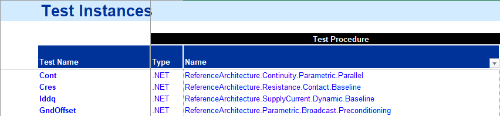
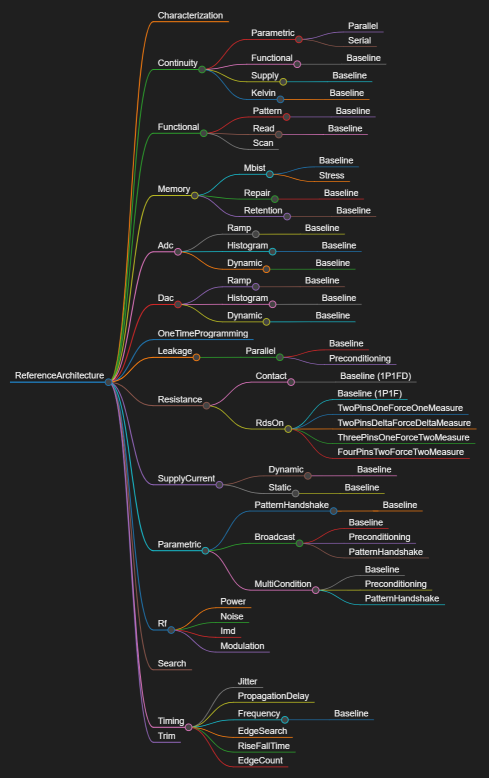

Test Methods
Test Methods in C#RA are built from test blocks as a reference implementation for common use cases. They show recommended practice, serve as self-documenting examples and can directly be (re-)used if they fit in the target scenario.
They are however not trying to be everybody's darling with a superset of functionality to make them suitable also for corner cases or uncommon combination of requirements (that place is already taken by Template.xla). Instead, users are encouraged to "roll their own", taking peeks from our implementations, copy & paste code and customize to their needs. Preferably in building their own "library" of customer specific, but reusable test methods that work great for the device families and derivatives needed.
That approach helps preventing the test methods offered as part of the C# Reference Architecture from getting bloated and hard to maintain. They are updated as IG-XL progresses and features evolve, so that they are a role model how to best use the product. Incompatible updates are avoided, but if inevitable, the changes are well and pro-actively documented.
Being called from the test instance sheet, a few special conditions apply to IG-XL test methods:
- need to be
[TestMethod]s inside[TestClass]es - can't use overloads
- fully qualified name always visible on the instance sheet (no concept of using exists)
- no type-ahead, only a drop-down to browse in alphabetical order
- not called from within code (exclusively from flow / instance sheet)

Test Methods represent the latest recommended implementation patterns. Users are encouraged to copy and customize these reference implementations to their specific needs.
Language Hierarchy
In order to minimize friction for users locating test methods they need, and for authors to offer a clear place to add new ones, the following hierarchy is used as defined & maintained here:

Test methods are always placed in a four-level hierarchical structure along this scheme:
- Entry Point
- Test Category
- Test Class
- Test Method
Entry Point
The entry point is called Csra.
All test methods offered by the C#RA are found under this node.
Test Category
The first level grouping reflects device block or test strategy related groups commonly found in test programs. Often, development is broken down to these functional concepts, dedicated team members with specific experience implement and use sub-flows following this structure.
Prominently providing this grouping can help readers or other non-authors involved with the test program as they can see the intention ("leakage" vs. "functional-parametric"), even though such grouping may result in overlap and redundancy in the offerings. The C#RA team opted for the not-so-easy path to improve usability and readability.
It is understood that this categorization will never be 100% clear and perfect, with categories being cross-cutting and blurring test techniques, methodologies or features. It was however the best of all other alternatives considered.
For new branches, subject matter experts are consulted to create a meaningful scheme fitting into the other categories (for their peers and for those who won't use it). Overall, it is considered okay if the number of test categories grows, but excessiveness is to be avoided. Similarly, the various domains should be consistently represented, with neither flooding the space.
Test Categories are implemented as sub namespaces.
Test Class
Test classes resemble the next level of grouping. They are named to describe the commonalities of the contained test methods but distinctive enough to set them apart from the others in the same test category. The name of that isn't repeated in the class name, even if that ends up being rather generic or ambiguous (Read) - it will only be visible on the instance sheet as part of the fully qualified name together with the test category.
Because IG-XL creates test class objects for the execution of a test method, the class footprint matters. They avoid large numbers of test methods or little functional or algorithmic overlap in the implementation. Class level fields should typically sharable between the test methods, or they are supersets.
When in doubt, prefer separate, more specific test classes. The number of test classes within a test group is uncritical, but consider alphabetical sorting when offering similar ones that only differ in a detail (SupplyAbc & SupplyDef is preferred over AbcSupply & DefSupply).
Even though technically possible in C#, test classes don't repeat the name of their parent test category (namespaces).
Test Method
Test methods finally are the entities called from the flow. Some test concepts / classes will have few or even only a single test method, while others require multitudes. The name reflects the specific purpose but is brief and clear. Multiple test methods clearly differentiate their functionality by their names.
Baseline is used for test methods that cover many (most) use cases and have no more descriptive, industry known name. In the case of more than one test methods in a test class, Baseline refers to the clearly dominant & common, or the most straight-forward use case. Others are named so that they clearly indicate how they differ from that (Leakage.Parallel.Baseline & .Preconditioning).
Alternatives Considered
Originally, a flat hierarchy was considered without adding a sub-namespace. It became quickly clear that the necessary grouping to avoid ambiguities would then sneak into the test class names, saving no screen space but giving away an opportunity to create structure in the implementation.
The following alternatives for method names Baseline were rejected:
Base- too close to inheriting from base classesBasic- could be confused with VisualBasicDefault- means using something that is explicitly specified elsewhereSimple- incorrect as the common case might not be the simple one
Open Items
The topic of handling incompatible updates in test methods is an ongoing consideration:
- Test methods are callable from test instance sheets, where name length and discoverability matter
- Users typically want the latest recommended implementations when upgrading
- Compatible additions (new overloads, optional parameters) can be made freely
- For incompatible changes, users can copy previous implementations to their own library if needed
Code Architecture
to be defined